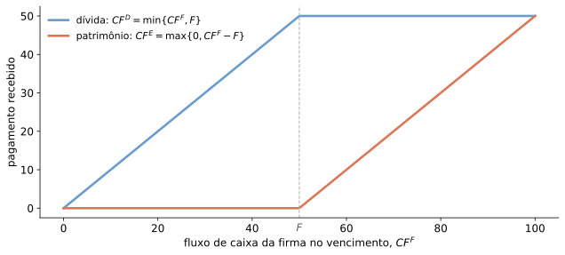
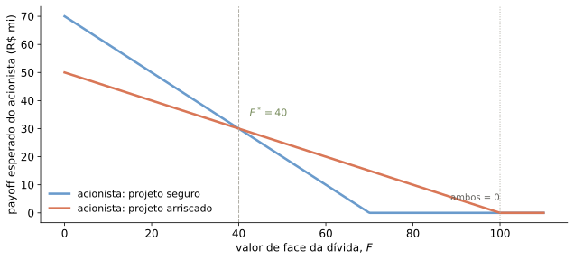

Informação Assimétrica e Estrutura de Capital — Parte II
Felipe Iachan
Onde estamos
Aula 13: seleção adversa — financiador não distingue firmas boas de ruins
Hoje: e se o problema não for o tipo da firma, mas as ações que ninguém observa?
Roteiro: debt overhang, risk shifting e racionamento de crédito por risco moral
A pergunta
Se ninguém observa as ações dentro da firma, como a própria estrutura de capital distorce as decisões de investimento?
Recall: os sintomas da seleção adversa (Aula 13)
Vimos que informação assimétrica nos mercados de crédito pode gerar:
Congelamento ou ausência ineficiente de crédito
Desconto na obtenção de financiamento
Sobreinvestimento em projetos de VPL < 0
Preferência por instrumentos menos sujeitos à seleção adversa
Distorções na divisão de risco e falta de diversificação
O roteiro de hoje
flowchart LR
A["Aula 13:<br/>seleção adversa<br/>(tipos ocultos)"] --> B["Aula 14:<br/>ações ocultas<br/>dentro da firma"]
B --> C["Debt overhang:<br/>subinvestimento"]
B --> D["Risk shifting:<br/>risco excessivo"]
B --> F["Racionamento de<br/>crédito (Tirole)"]
C --> E["Aula 15:<br/>moral hazard e<br/>remuneração"]
D --> E
F --> E
Antes, o financiador não sabia o tipo da firma. Agora, ninguém observa o que os agentes internos fazem.
Debt Overhang
Myers (1977)
Custo de agência do uso de dívida
Toma o nível de endividamento como pré-determinado
Esse nível é tão alto que prejudica a tomada de novo crédito e a entrada em projetos de VPL > 0
Possível ineficiência depende da impossibilidade de renegociar o valor da dívida
O balanço da firma
Empresa cujo único ativo propicia uma oportunidade futura de investimento — e nada mais. Já emitiu dívida (inicialmente arriscada) com valor de face \(F\).
Valor de ativos: \(V\)
Valor da dívida: \(V_D\)
Patrimônio líquido: \(V_E\)
Pagamentos: dívida arriscada
Como a dívida é arriscada,
\[CF^{D}=\min\left\{ CF^{F},F\right\}\]
\[CF^{E}=\max\left\{ 0,CF^{F}-F\right\}\]
em que \(CF^F\) é o fluxo de caixa gerado pelos ativos da firma no vencimento.
Payoffs de dívida e patrimônio

Dívida é côncava (como venda de put); patrimônio é convexo (como compra de call) em \(CF^F\).
A opção de investimento
Com probabilidade \(\frac{1}{2}\) surge a possibilidade de investir R$1 mi para um ganho imediato de R$2 mi
Decisão de investimento surge antes do vencimento da dívida
Quando \(F=0\) (nenhuma dívida emitida):
Decisão é trivial: investir sempre que a oportunidade aparecer
O acionista prefere o arriscado quando \(\tfrac{1}{2}(100-F)>70-F\), ou seja, para
\[F > F^{*}=40\]
Com \(F\) acima desse limiar, o acionista escolhe o projeto pior (VE menor), mesmo destruindo valor da firma — risk shifting.
Risk shifting: o cruzamento

Comparando os dois problemas
Debt overhang
Risk shifting
Direção da distorção
Subinvestimento em VPL > 0
Sobreinvestimento em risco
Payoff ao acionista
mesma função convexa\(\max(0,CF^F-F)\)
mesma função convexa\(\max(0,CF^F-F)\)
Por quê
o ganho do investimento vaza para a dívida antiga
a convexidade passa a premiar risco assumido
Solução no modelo
renegociar a dívida
limitar/monitorar o risco assumido
Ambos vêm da mesma raiz — dívida alta + responsabilidade limitada — mas o payoff convexo distorce em direções opostas: retém o acionista fora de um bom investimento, ou o empurra para um projeto pior.
Ações ocultas também racionam crédito
Até aqui, a dívida já emitida distorcia decisões depois de tomada.
E se a ação oculta acontecer antes, afetando quanto se consegue captar?
Racionamento ineficiente de crédito pode vir da mesma raiz: ações não observáveis
Exemplo simples e linear de risco moral (Tirole, 2006)
O ambiente
Agentes neutros ao risco, sem desconto intertemporal
Empreendedor tem ativos (patrimônio próprio) \(A>0\)
Oportunidade de investimento de escala fixa: custo \(I>A\)
Projeto gera \(R>I>0\) em caso de sucesso, e \(0\) em caso de fracasso
A ação oculta
Ação eficiente: gera probabilidade \(p_{H}\) de sucesso
Ação ineficiente: gera probabilidade \(p_{L}\), mas dá ao empreendedor um benefício privado não pecuniário \(B>0\)
\[p_{H}R-I>0>p_{L}R+B-I\]
Só a ação eficiente cria valor — mas, sem incentivos, o empreendedor prefere a ineficiente (fica com \(B\)).
Sem responsabilidade limitada
Cobrar \(I\) do empreendedor após a maturidade, independentemente do resultado
Empreendedor vira “residual claimant”: fica com \(R-I\) no sucesso, \(-I\) no fracasso
Incentivos corretos — mas exige que ele possa arcar com perdas ilimitadas
Com responsabilidade limitada
Contrato de financiamento passa a ser arriscado
Especifica apenas o retorno \(R_{L}\) ao financiador (lender) em caso de sucesso
Empreendedor mantém \(R_{E}=\left(R-R_{L}\right)\) em caso de sucesso, \(0\) no fracasso
Combinação entre dívida arriscada e ações (equity) não é determinada neste modelo
Compatibilidade de incentivos
O empreendedor só escolhe a ação eficiente se
\[p_{H}R_{E}\geq p_{L}R_{E}+B\]
Limite de crédito: renda penhorável
Isolando \(R_{E}\) na condição de incentivos, com \(\Delta p\equiv p_{H}-p_{L}\):
\[R_{L}\leq\left(R-\frac{B}{\Delta p}\right)\]
Definimos \(\rho_{0}=p_{H}\left(R-\dfrac{B}{\Delta p}\right)\): renda empenhável (pledgeable), o limite de crédito
Note que \(\rho_{0}<p_{H}R\) — o financiador nunca capta o VPL inteiro